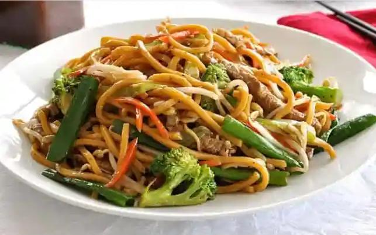

Beijing Style Noodles

Description
Greasy, but light, and undeniably delicious.
The hardest true Chinese staple to find at an American Chinese restuarant
Learn how to make them yourself!
Ingredients
- Noodles
- Chicken or Beef
- Garlic
- Vegetables: Onion, Cucumber, Cabbage, Broccoli
- Stir Fry Sauce
- Water
- Spice & Season
Steps
- Prepare meat and heat oil
- Cook the noodles and vegetables
- Remove from heat and add leafy greens
- Return to heat 1 minute
- Serve immediately